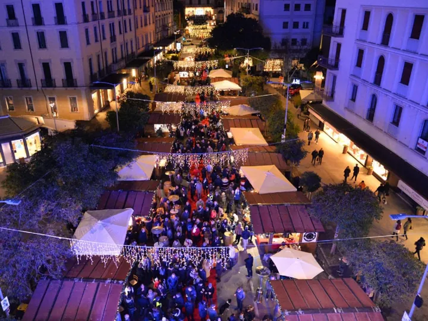

da sab 28 nov a dom 3 gen
La magia del Natale
Dal 5 dicembre al 3 gennaio torna "La magia del Natale", con Conegliano che si trasforma in un grande Villaggio di Natale, animando il centro città con gioia, eventi e tanta atmosfera festiva.
 Indicazioni
Indicazioni
- Costi e prenotazioni
- Costo non indicato · Prenotazione non indicata
- Programma
- Programma da verificare. Apri la fonte ufficiale per orari e possibili aggiornamenti.
- In caso di maltempo
- Nessuna indicazione specifica pubblicata.
- Note
- Acquisito automaticamente dalla fonte.
L’EVENTO
Descrizione completa
Dal 5 dicembre al 3 gennaio torna "La magia del Natale", con Conegliano che si trasforma in un grande Villaggio di Natale, animando il centro città con gioia, eventi e tanta atmosfera festiva.
L'anticipo delle feste comincia già il 28 novembre in Piazza Cima , dove trova spazio la classica pista di pattinaggio sul ghiaccio .
Dal 5 dicembre il vero cuore pulsante dell'evento diventa Viale Carducci , pronto ad accogliere stand enogastronomici e casette d'artigianato all'interno di un nuovo e suggestivo allestimento curato in collaborazione con Nonno Andrea.
Corte delle Rose diventa il regno dedicato ai più piccoli : qui prende vita la Casetta di Babbo Natale, il luogo magico dove scrivere e spedire la propria letterina direttamente al Polo Nord. Sempre in Corte delle Rose vi aspetta la grande novità del Natale 2026, una fantastica slitta che permette di viaggiare virtualmente verso il Polo Nord grazie ai visori 3D .
Il 31 dicembre torna il tradizionale Concerto di Capodanno lungo la Gradinata degli Alpini , con tanta musica dal vivo per festeggiare insieme fino alla mezzanotte.
Durante tutti i fine settimana il villaggio si anima con esibizioni, concerti e numerose iniziative per tutti i gusti!
IL PROGRAMMA
Programma e orari
Appuntamenti raccolti dalle fonti elencate. Dove manca un orario, non è ancora disponibile in questa scheda.
Programma pubblicato
- 2026-11-28 — 2027-01-03 ·
INFORMAZIONI UTILI
Prima di partire
- Controllare la fonte prima di partire.
ORGANIZZAZIONE